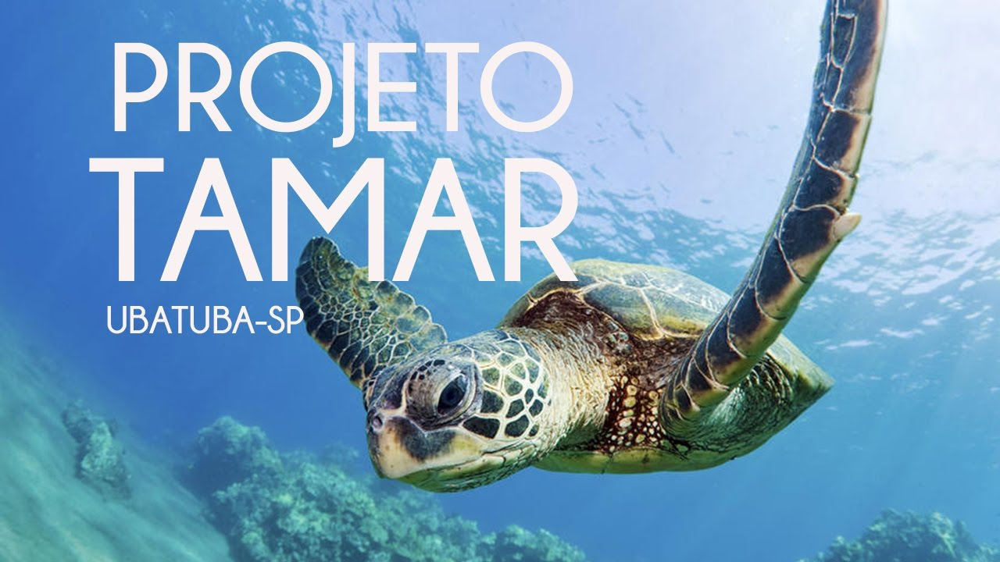
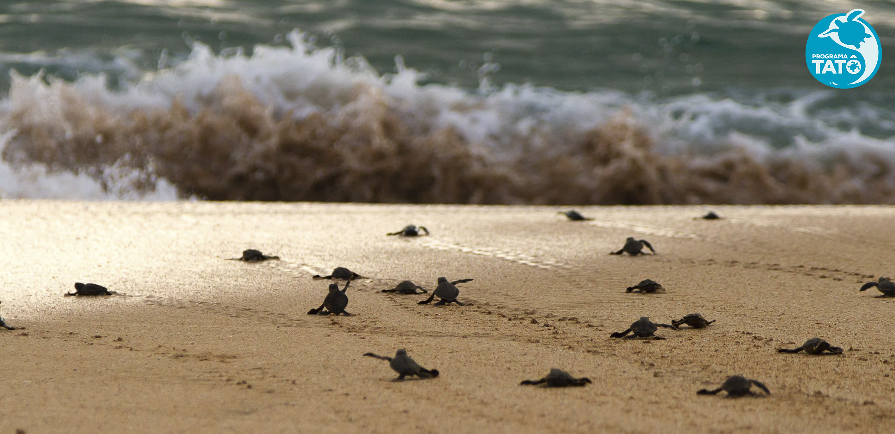
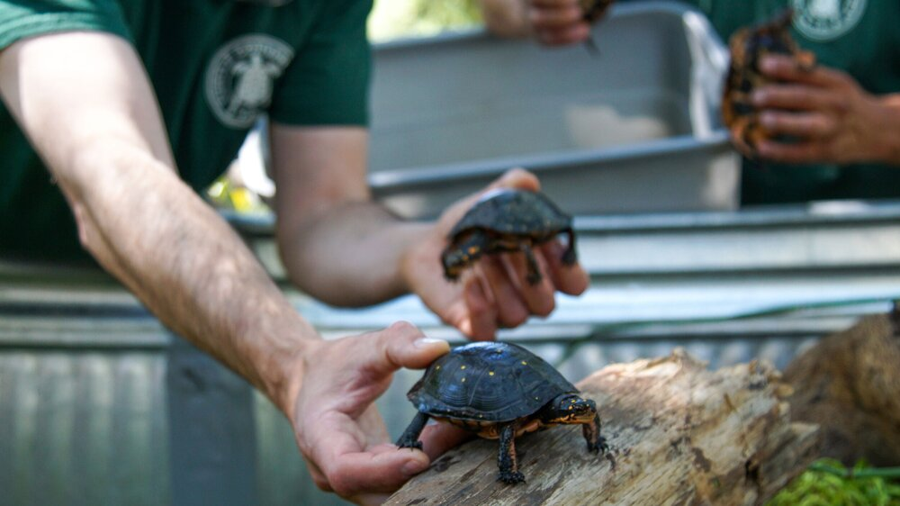

Projeto Tamar
O Tamar é resultado do esforço, do trabalho e da colaboração de todos os setores da sociedade, desde os pescadores, suas famílias e suas comunidades, até a equipe de técnicos, pesquisadores e cientistas do Projeto; publicitários, artistas, jornalistas e os meios de comunicação divulgam e promovem a mensagem e o trabalho de conservação das tartarugas marinhas no Brasil.
Programa Tatô
Uma das dificuldades na gestão de populações de espécies aquáticas prende-se com a informação sobre a genética dos indivíduos como, por exemplo, a confirmação da paternidade dos indivíduos que nascem em ambiente controlado como nos aquários públicos, a origem dos fundadores da população, o seu grau de parentesco e a confirmação de que todos os indivíduos da população pertencem à mesma espécie.
U.S Fish & WildLife Service
Para a participação nos esforços de conservação das tartarugas marinhas nas ilhas Bijagós, o Programa Tatô recebe também financiamentos do Instituto da Biodiversidade e das Áreas Protegidas da Guiné-Bissau – IBAP, no quadro de um projeto financiado pela Fundação MAVA.